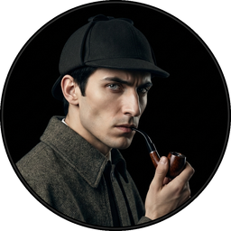

Cast of Characters
Click to hear their voice


Chapter I. Mr. Sherlock Holmes.
Mr. Sherlock Holmes, who was usually very late in the mornings, save upon those not infrequent occasions when he was up all night, was seated at the breakfast table. I stood upon the hearth-rug and picked up the stick which our visitor had left behind him the night before. It was a fine, thick piece of wood, bulbous-headed, of the sort which is known as a “Penang lawyer.” Just under the head was a broad silver band nearly an inch across. “To James Mortimer, M.R.C.S., from his friends of the C.C.H.,” was engraved upon it, with the date “1884.” It was just such a stick as the old-fashioned family practitioner used to carry—dignified, solid, and reassuring.
“Well, Watson, what do you make of it?”
Holmes was sitting with his back to me, and I had given him no sign of my occupation.
“How did you know what I was doing? I believe you have eyes in the back of your head.”
“I have, at least, a well-polished, silver-plated coffee-pot in front of me,” said he. “But, tell me, Watson, what do you make of our visitor’s stick? Since we have been so unfortunate as to miss him and have no notion of his errand, this accidental souvenir becomes of importance. Let me hear you reconstruct the man by an examination of it.”
“I think,” said I, following as far as I could the methods of my companion, “that Dr. Mortimer is a successful, elderly medical man, well-esteemed since those who know him give him this mark of their appreciation.”
“Good!” said Holmes. “Excellent!”
“I think also that the probability is in favour of his being a country practitioner who does a great deal of his visiting on foot.”
“Why so?”
“Because this stick, though originally a very handsome one has been so knocked about that I can hardly imagine a town practitioner carrying it. The thick-iron ferrule is worn down, so it is evident that he has done a great amount of walking with it.”
“Perfectly sound!” said Holmes.
“And then again, there is the ‘friends of the C.C.H.’ I should guess that to be the Something Hunt, the local hunt to whose members he has possibly given some surgical assistance, and which has made him a small presentation in return.”
“Really, Watson, you excel yourself,” said Holmes, pushing back his chair and lighting a cigarette. “I am bound to say that in all the accounts which you have been so good as to give of my own small achievements you have habitually underrated your own abilities. It may be that you are not yourself luminous, but you are a conductor of light. Some people without possessing genius have a remarkable power of stimulating it. I confess, my dear fellow, that I am very much in your debt.”
He had never said as much before, and I must admit that his words gave me keen pleasure, for I had often been piqued by his indifference to my admiration and to the attempts which I had made to give publicity to his methods. I was proud, too, to think that I had so far mastered his system as to apply it in a way which earned his approval. He now took the stick from my hands and examined it for a few minutes with his naked eyes. Then with an expression of interest he laid down his cigarette, and carrying the cane to the window, he looked over it again with a convex lens.
“Interesting, though elementary,” said he as he returned to his favourite corner of the settee. “There are certainly one or two indications upon the stick. It gives us the basis for several deductions.”
“Has anything escaped me?” I asked with some self-importance. “I trust that there is nothing of consequence which I have overlooked?”
“I am afraid, my dear Watson, that most of your conclusions were erroneous. When I said that you stimulated me I meant, to be frank, that in noting your fallacies I was occasionally guided towards the truth. Not that you are entirely wrong in this instance. The man is certainly a country practitioner. And he walks a good deal.”
“Then I was right.”
“To that extent.”
“But that was all.”
“No, no, my dear Watson, not all—by no means all. I would suggest, for example, that a presentation to a doctor is more likely to come from a hospital than from a hunt, and that when the initials ‘C.C.’ are placed before that hospital the words ‘Charing Cross’ very naturally suggest themselves.”
“You may be right.”
“The probability lies in that direction. And if we take this as a working hypothesis we have a fresh basis from which to start our construction of this unknown visitor.”
“Well, then, supposing that ‘C.C.H.’ does stand for ‘Charing Cross Hospital,’ what further inferences may we draw?”
“Do none suggest themselves? You know my methods. Apply them!”
“I can only think of the obvious conclusion that the man has practised in town before going to the country.”
“I think that we might venture a little farther than this. Look at it in this light. On what occasion would it be most probable that such a presentation would be made? When would his friends unite to give him a pledge of their good will? Obviously at the moment when Dr. Mortimer withdrew from the service of the hospital in order to start a practice for himself. We know there has been a presentation. We believe there has been a change from a town hospital to a country practice. Is it, then, stretching our inference too far to say that the presentation was on the occasion of the change?”
“It certainly seems probable.”
“Now, you will observe that he could not have been on the staff of the hospital, since only a man well-established in a London practice could hold such a position, and such a one would not drift into the country. What was he, then? If he was in the hospital and yet not on the staff he could only have been a house-surgeon or a house-physician—little more than a senior student. And he left five years ago—the date is on the stick. So your grave, middle-aged family practitioner vanishes into thin air, my dear Watson, and there emerges a young fellow under thirty, amiable, unambitious, absent-minded, and the possessor of a favourite dog, which I should describe roughly as being larger than a terrier and smaller than a mastiff.”
I laughed incredulously as Sherlock Holmes leaned back in his settee and blew little wavering rings of smoke up to the ceiling.
“As to the latter part, I have no means of checking you,” said I, “but at least it is not difficult to find out a few particulars about the man’s age and professional career.” From my small medical shelf I took down the Medical Directory and turned up the name. There were several Mortimers, but only one who could be our visitor. I read his record aloud.
“Mortimer, James, M.R.C.S., 1882, Grimpen, Dartmoor, Devon. House-surgeon, from 1882 to 1884, at Charing Cross Hospital. Winner of the Jackson prize for Comparative Pathology, with essay entitled ‘Is Disease a Reversion?’ Corresponding member of the Swedish Pathological Society. Author of ‘Some Freaks of Atavism’ (Lancet 1882). ‘Do We Progress?’ (Journal of Psychology, March, 1883). Medical Officer for the parishes of Grimpen, Thorsley, and High Barrow.”
“No mention of that local hunt, Watson,” said Holmes with a mischievous smile, “but a country doctor, as you very astutely observed. I think that I am fairly justified in my inferences. As to the adjectives, I said, if I remember right, amiable, unambitious, and absent-minded. It is my experience that it is only an amiable man in this world who receives testimonials, only an unambitious one who abandons a London career for the country, and only an absent-minded one who leaves his stick and not his visiting-card after waiting an hour in your room.”
“And the dog?”
“Has been in the habit of carrying this stick behind his master. Being a heavy stick the dog has held it tightly by the middle, and the marks of his teeth are very plainly visible. The dog’s jaw, as shown in the space between these marks, is too broad in my opinion for a terrier and not broad enough for a mastiff. It may have been—yes, by Jove, it is a curly-haired spaniel.”
He had risen and paced the room as he spoke. Now he halted in the recess of the window. There was such a ring of conviction in his voice that I glanced up in surprise.
“My dear fellow, how can you possibly be so sure of that?”
“For the very simple reason that I see the dog himself on our very door-step, and there is the ring of its owner. Don’t move, I beg you, Watson. He is a professional brother of yours, and your presence may be of assistance to me. Now is the dramatic moment of fate, Watson, when you hear a step upon the stair which is walking into your life, and you know not whether for good or ill. What does Dr. James Mortimer, the man of science, ask of Sherlock Holmes, the specialist in crime? Come in!”
The appearance of our visitor was a surprise to me, since I had expected a typical country practitioner. He was a very tall, thin man, with a long nose like a beak, which jutted out between two keen, grey eyes, set closely together and sparkling brightly from behind a pair of gold-rimmed glasses. He was clad in a professional but rather slovenly fashion, for his frock-coat was dingy and his trousers frayed. Though young, his long back was already bowed, and he walked with a forward thrust of his head and a general air of peering benevolence. As he entered his eyes fell upon the stick in Holmes’s hand, and he ran towards it with an exclamation of joy. “I am so very glad,” said he. “I was not sure whether I had left it here or in the Shipping Office. I would not lose that stick for the world.”
“A presentation, I see,” said Holmes.
“Yes, sir.”
“From Charing Cross Hospital?”
“From one or two friends there on the occasion of my marriage.”
“Dear, dear, that’s bad!” said Holmes, shaking his head.
Dr. Mortimer blinked through his glasses in mild astonishment. “Why was it bad?”
“Only that you have disarranged our little deductions. Your marriage, you say?”
“Yes, sir. I married, and so left the hospital, and with it all hopes of a consulting practice. It was necessary to make a home of my own.”
“Come, come, we are not so far wrong, after all,” said Holmes. “And now, Dr. James Mortimer—”
“Mister, sir, Mister—a humble M.R.C.S.”
“And a man of precise mind, evidently.”
“A dabbler in science, Mr. Holmes, a picker up of shells on the shores of the great unknown ocean. I presume that it is Mr. Sherlock Holmes whom I am addressing and not—”
“No, this is my friend Dr. Watson.”
“Glad to meet you, sir. I have heard your name mentioned in connection with that of your friend. You interest me very much, Mr. Holmes. I had hardly expected so dolichocephalic a skull or such well-marked supra-orbital development. Would you have any objection to my running my finger along your parietal fissure? A cast of your skull, sir, until the original is available, would be an ornament to any anthropological museum. It is not my intention to be fulsome, but I confess that I covet your skull.”
Sherlock Holmes waved our strange visitor into a chair. “You are an enthusiast in your line of thought, I perceive, sir, as I am in mine,” said he. “I observe from your forefinger that you make your own cigarettes. Have no hesitation in lighting one.”
The man drew out paper and tobacco and twirled the one up in the other with surprising dexterity. He had long, quivering fingers as agile and restless as the antennæ of an insect.
Holmes was silent, but his little darting glances showed me the interest which he took in our curious companion. “I presume, sir,” said he at last, “that it was not merely for the purpose of examining my skull that you have done me the honour to call here last night and again today?”
“No, sir, no; though I am happy to have had the opportunity of doing that as well. I came to you, Mr. Holmes, because I recognized that I am myself an unpractical man and because I am suddenly confronted with a most serious and extraordinary problem. Recognizing, as I do, that you are the second highest expert in Europe—”
“Indeed, sir! May I inquire who has the honour to be the first?” asked Holmes with some asperity.
“To the man of precisely scientific mind the work of Monsieur Bertillon must always appeal strongly.”
“Then had you not better consult him?”
“I said, sir, to the precisely scientific mind. But as a practical man of affairs it is acknowledged that you stand alone. I trust, sir, that I have not inadvertently—”
“Just a little,” said Holmes. “I think, Dr. Mortimer, you would do wisely if without more ado you would kindly tell me plainly what the exact nature of the problem is in which you demand my assistance.”